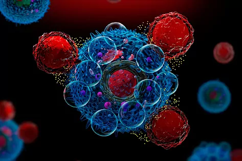

.png)
Terapias CAR-T y tumores sólidos: primeros resultados positivos

Uno de los grandes avances en el tratamiento del cáncer de los últimos años ha sido el desarrollo de la inmunoterapia, que aprovecha el propio sistema inmune del paciente para combatir la enfermedad.
Entre las diferentes aproximaciones que se utilizan, una de ellas consiste en extraer linfocitos para modificarlos genéticamente para que reconozcan y ataquen las células cancerosas y luego reintroducirlos en el paciente, lo que se conoce como CAR-T. Estas terapias han logrado importantes resultados en tumores hematológicos, aunque no estaban siendo eficaces en los tumores sólidos. Sin embargo, esto está cambiando recientemente.
"Ya empezamos a tener resultados positivos en tumores sólidos. Por ejemplo, ya hay ensayos en donde hay tasas de respuesta objetiva en cerca del 50% de los pacientes. Hace unos años nuestra duda era saber si esta aproximación iba a funcionar o no. Ahora ya sabemos que lo hacen y estamos trabajando para mejorarlos", explica Sonia Guedan, líder del Grupo de Investigación de Inmunoterapias Celulares para el cáncer del Instituto de Investigaciones Biomédicas August Pi i Sunyer (IDIBAPS), de Barcelona.